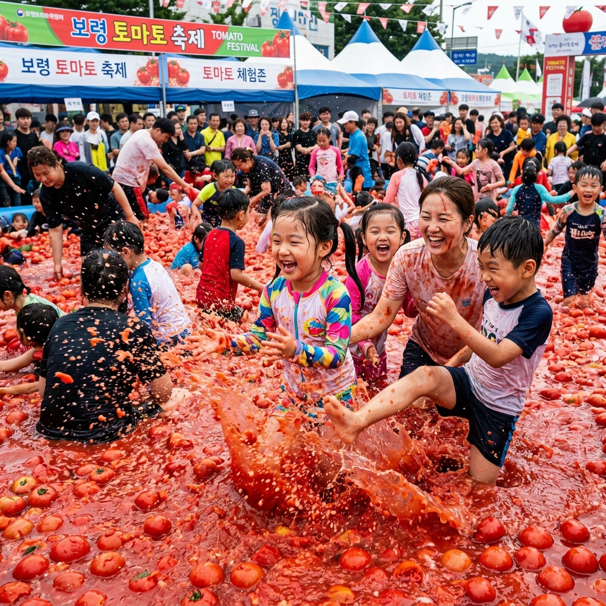
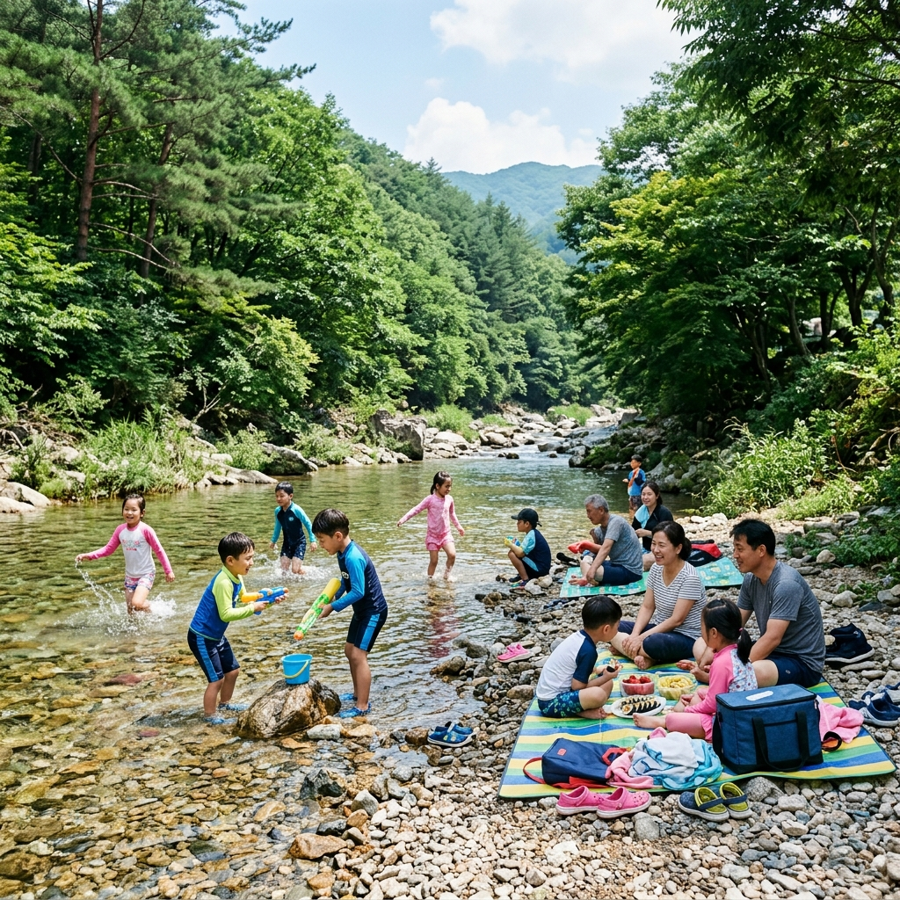
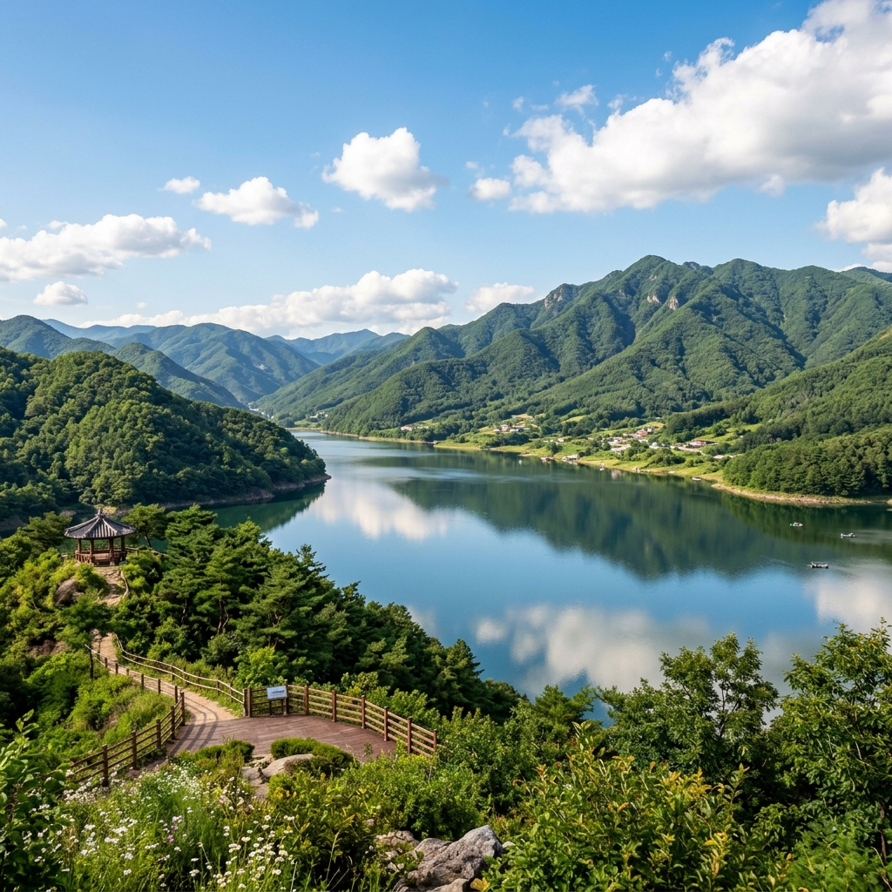

"토마토 풀장에 들어간다고요?" — 화천 토마토축제를 처음 알게 됐을 때 반응이 딱 이랬습니다.
실제로 거대한 풀장에 토마토를 가득 채우고 그 안에 들어가 노는 행사가 전국에서 몇 안 되는 곳 중 하나가 화천입니다.
황금반지 찾기는 단순 행운 이벤트처럼 보이지만, 풀장 속 토마토 사이를 뒤지며 찾는 과정 자체가 체험의 하이라이트입니다. 다녀온 뒤 느꼈던 솔직한 후기를 정리합니다.
화천 토마토축제는 강원도 화천군에서 매년 7월 말~8월 초에 열리는 지역 특산물 축제입니다.
화천군은 고랭지 지역으로 당도 높은 토마토 산지로 유명합니다. 이 토마토를 활용해 대형 토마토 풀장, 황금반지 찾기, 토마토 세례, 사내천 물놀이 등 다양한 프로그램을 운영합니다.
2026년 정확한 날짜와 세부 프로그램은 화천군청 공식 채널을 통해 확인하시기 바랍니다.
행사장은 화천군 화천읍 사내천 일원으로, 강변을 따라 넓게 조성됩니다. 차량 접근이 가능하지만, 주차 공간이 혼잡할 수 있으니 셔틀버스 이용을 권장합니다.

황금반지 찾기는 실제 진짜 황금반지를 토마토 풀장 속에 숨겨두는 이벤트입니다.
찾은 사람에게 실제 황금반지를 증정합니다. 공식 사회자 선언과 함께 현장에서 받는 방식으로 진행됩니다.
당연히 확률이 매우 낮습니다. 하루 회당 1~2개 정도의 황금반지가 숨겨진다고 알려져 있습니다.
그렇다고 실망하기는 이릅니다. 풀장 속을 뒤지는 행위 자체가 체험의 재미이기 때문입니다. 황금반지를 찾겠다는 목표로 신나게 뒤지다 보면, 어느 순간 온몸이 토마토 물에 흠뻑 젖어 있습니다.
토마토 풀장은 회당 입장 인원이 제한됩니다. 입장 시간에 맞춰 현장 배부 번호표 또는 사전 예약으로 입장하는 방식입니다.
1회 체험 시간은 약 20~30분입니다. 풀장에서 나온 후 샤워 시설을 이용할 수 있으나, 성수기에는 대기가 길 수 있으므로 여분 속옷과 갈아입을 옷을 챙기는 것이 좋습니다.
밝은 색상의 흰 옷은 피하세요. 토마토 즙이 들어가면 잘 빠지지 않습니다. 어두운 색상의 구기거나 버려도 되는 옷을 추천합니다.
토마토 풀장 외에도 사내천 강변 물놀이장이 별도로 운영됩니다.
사내천은 한강의 지류로, 수질이 깨끗하고 수심이 얕아 어린이 물놀이에 적합합니다. 강변 모래사장도 잘 정비돼 있습니다.
물놀이장 안전 요원이 배치돼 있고, 튜브와 구명조끼 대여도 가능합니다. 단, 대여 물품은 수량이 한정되므로 직접 챙겨 가면 기다릴 필요가 없습니다.

토마토 즙이 눈에 들어갈 수 있습니다. 콘택트렌즈 착용자는 풀장 체험을 피하거나 방수 고글을 반드시 착용하세요.
풀장 내부는 미끄럽습니다. 넘어지기 쉬운 노약자나 임산부에게는 적합하지 않습니다. 어린아이도 반드시 어른이 옆에서 함께 체험해야 합니다.
화천은 수도권에서 차로 약 2시간 거리입니다. 축제장 인근 숙소가 많지 않아 성수기 1박은 일찍 예약이 필수입니다.
화천에는 토마토축제 외에도 산소100리길이라는 트레킹 코스가 있습니다.
화천군 전체를 관통하는 이 길은 총 100리(약 40km)에 걸쳐 계곡과 숲을 연결합니다. 여름에는 짧은 구간만 걸어도 숲 속의 청량함을 만끽할 수 있습니다.
축제 당일 오전에 짧은 트레킹을 하고 오후에 축제를 즐기는 조합도 좋습니다.
화천군의 대표 명소는 파로호입니다.
한국전쟁 당시 화천 수력발전소 주변에서 큰 전투가 벌어진 역사적 장소로, 현재는 수상 레저와 낚시 명소로 유명합니다.
평화의 댐은 북한 금강산댐에 대비해 건설된 댐으로, 안보 관광지이자 전망대로 인기입니다. 댐 위에서 바라보는 비무장지대 방향 경치는 강원도의 산세를 실감케 합니다.

서울 기준 자동차로 46번 국도 또는 서울양양고속도로 이용 시 약 2시간 소요됩니다.
대중교통은 동서울터미널 또는 상봉터미널에서 화천 직행버스를 이용하면 됩니다.
축제장은 화천읍 내에 위치하므로, 화천시외버스터미널에서 도보 또는 택시로 접근 가능합니다.
버릴 수 있는 어두운 색상의 옷과 신발을 챙기세요. 아쿠아슈즈도 풀장 안에서 착용 가능한지 확인 후 지참합니다.
방수 지퍼백을 여러 개 챙겨 스마트폰·지갑·카드를 분리 보관하세요. 물기가 많은 환경에서 귀중품 관리가 중요합니다.
갈아입을 옷은 넉넉히 2벌 이상, 대용량 비닐백도 젖은 옷 보관용으로 유용합니다.
색다른 여름 체험을 원하는 커플이나 가족에게 강력 추천합니다.
아이들은 물론 어른도 동심으로 돌아가 즐길 수 있습니다. 사전에 '망가질 각오'를 하고 간다면 더욱 신나는 경험이 될 것입니다.
자연 계곡 물놀이까지 한 번에 즐길 수 있어 당일치기 가족 여행지로도 손색이 없습니다.